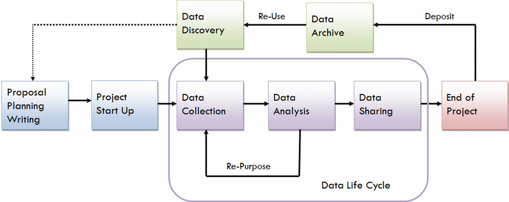

Library Support of the Data Life Cycle
Megan Potterbusch
August 11, 2016
About Me
Megan Potterbusch
Simmons College, Masters in Library and Information Science
Earlham College, Bachelor of Arts
My website
Twitter:
@librarpotter
Typical data practices
No plan for data preservation or sharing
Laissez-faire file and data organization
Data storage:
Personal computer
Personal drives
Cloud
Data Analysis:
Scientific code kept private or without a license
Unreproducible workflows
Supporting Researchers with Data
Research life cycle outline
 Image Credit: University of Virginia
Education
Value of depositing data
Citing or linking to preserved data
Copyright
Privacy
Funder/publisher requirements
Proposal, Planning, Writing, and Start Up
Getting organized
Folder structure
Naming conventions
Documentation strategy
Data structure
Organizational best practices for data
What data to gather and what to preserve
Data Management Plans
Choosing a data repository
Institutional
Domain specific
Domain agnostic
Consultation on compliance with repository requirements
Data Discovery
Data repositories as a resource
Best practices for reusing data
Data Analysis
Data processing
Tools (e.g.
Open Refine
)
Techniques (e.g. A peer based lecture series)
Skills training (e.g.
Software Carpentry
)
Data Sharing
Connect researchers with repositories
Data description
Creation of data dictionary and/or metadata registry
Outline of data collection methods
Definition of units
Data deposit in repository
Curation activities
Future of Data in Libraries
Support Researchers
Data preservation and access
Advocate for open science
Questions?
Thank you